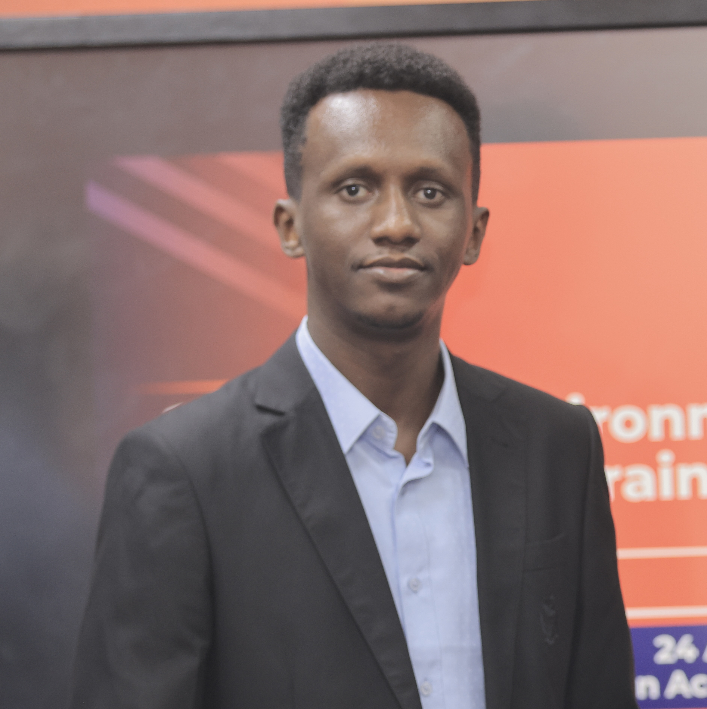

Omar Mahadalle
About
I'm a marine biologist working at the intersection of genomics and conservation. At SU-IEMS, I use genomic data from historical museum specimens and contemporary samples to reconstruct the population history of the delicate round herring (Spratelloides delicatulus). This work is part of the Philippines PIRE Project, an NSF-funded effort examining a century of change in Philippine marine biodiversity under human pressures.
Before coming to the Philippines, I earned a BSc (Honours) in Marine Science from Red Sea University in Sudan, specializing in biological oceanography and building field experience in the Red Sea's remarkably diverse marine ecosystems.
Research interests
Publications & presentations
Education
Silliman University, Philippines
Red Sea University, Sudan
Awards, grants & conferences
Strengthening protections for the dwarf gulper shark in Somalia
BSc (Hons) Marine Science, Red Sea University, Sudan
Contact
omaramahadalle(at)su.edu.ph
Institute of Environmental and Marine Sciences, Silliman University, Dumaguete City, Philippines